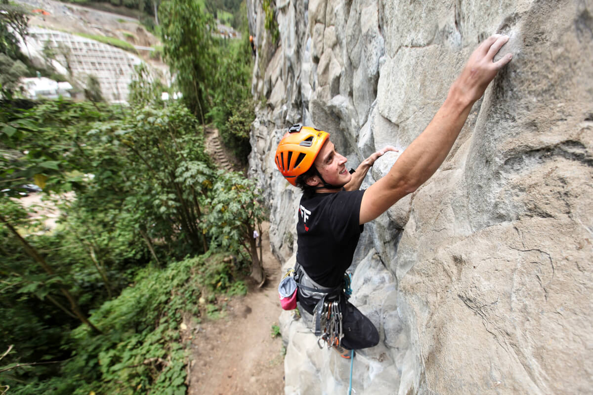
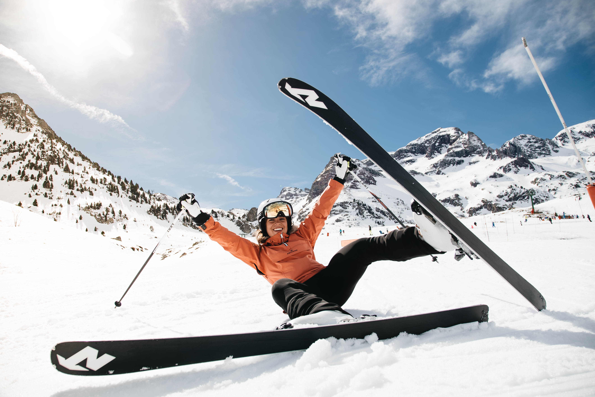

Atracciones
Escalada en montañas
Práctica deportiva que, consiste en subir o recorrer paredes de roca, laderas escarpadas u otros relieves naturales caracterizados por su verticalidad, empleando medios de aseguramiento recuperables en casi su totalidad y la posibilidad en su progresión de utilizar medios.
$50.000
Esqui en nieve
Es un deporte de montaña que consiste en el deslizamiento por la nieve, por medio de dos tablas sujetas a la suela de las botas del esquiador.Se practica durante casi todo el año,en lugares con glaciares.
$57.000
Rafting

Es un deporte de aventura que consiste en el descenso de ríos de aguas bravas en una balsa neumática resistente a los golpes. Dentro de cada balsa o Raft pueden ir normalmente entre 6 y 8 personas acompañados por el guía que se sitúa en la parte trasera de la embarcación, desde donde la dirige.
$54.000